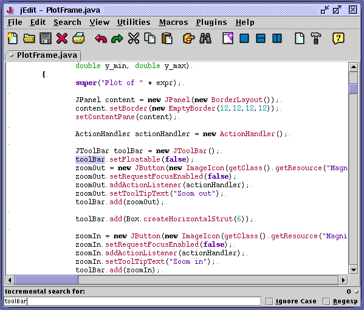

The Search>Quick Search (keyboard equivalent: Control-,) and Search>Incremental Search (keyboard equivalent: Control-.) commands provide a way to quickly search for something without having to open a dialog box first. The difference between the two commands is that Quick Search only searches for a string when you press Enter, while Incremental Search will search immediately as characters are typed.
These commands will only search in the current buffer, even if multiple file search is enabled.
Figure 6-4. An incremental search in progress
